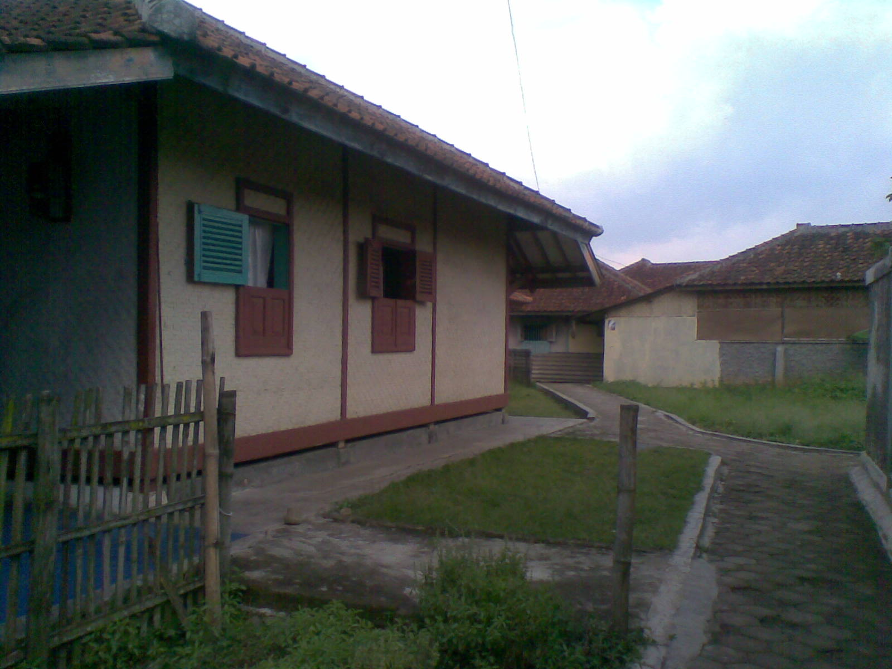

Kampung Mahmud adalah sebuah desa yang terletak di Kecamatan Rancamanyar, Kabupaten Bandung, Jawa Barat. Kampung ini dikenal dengan budaya dan adat istiadatnya yang kental, serta suasana pedesaan yang asri dan sejuk. Sejarah Kampung Mahmud tidak terlepas dari peran pentingnya dalam penyebaran agama Islam di wilayah Jawa Barat.
Penduduk Kampung Mahmud sangat menjunjung tinggi nilai-nilai tradisi dan kebersamaan. Mereka hidup dalam harmoni dengan alam sekitar, menjaga kelestarian lingkungan, dan menghormati warisan leluhur mereka. Kampung ini juga terkenal dengan kegiatan-kegiatan keagamaan yang rutin diselenggarakan, seperti pengajian, dzikir, dan perayaan hari-hari besar Islam.
Salah satu daya tarik Kampung Mahmud adalah kerajinan tangan tradisional yang dihasilkan oleh penduduknya. Kerajinan seperti anyaman bambu, tenun, dan ukiran kayu menjadi salah satu sumber mata pencaharian utama. Selain itu, Kampung Mahmud juga memiliki beberapa situs bersejarah yang sering dikunjungi oleh wisatawan, seperti makam keramat dan masjid kuno.
Untuk mencapai Kampung Mahmud, wisatawan dapat menempuh perjalanan darat dari Kota Bandung dengan jarak sekitar 20 kilometer. Setibanya di Kampung Mahmud, pengunjung dapat menikmati keindahan alam yang masih alami, udara yang segar, dan keramahan penduduk setempat.
Kampung Mahmud merupakan contoh nyata bagaimana masyarakat dapat menjaga keseimbangan antara perkembangan modern dan pelestarian budaya tradisional. Dengan semangat gotong royong dan kebersamaan, penduduk Kampung Mahmud terus berusaha mempertahankan identitas budaya mereka di tengah arus globalisasi.
Pengertian Kampung Mahmud

Lokasi Lengkap: Kampung Mahmud, Kecamatan Rancamanyar,
di RW 04, Desa Mekar Rahayu, Kecamatan Margaasih, Kabupaten Bandung, Jawa Barat.